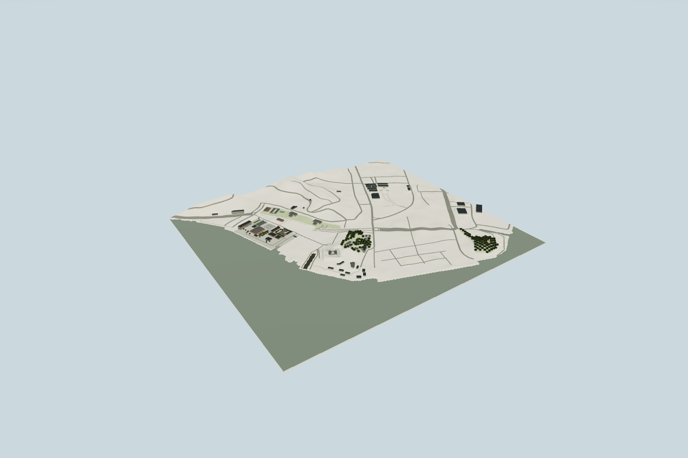
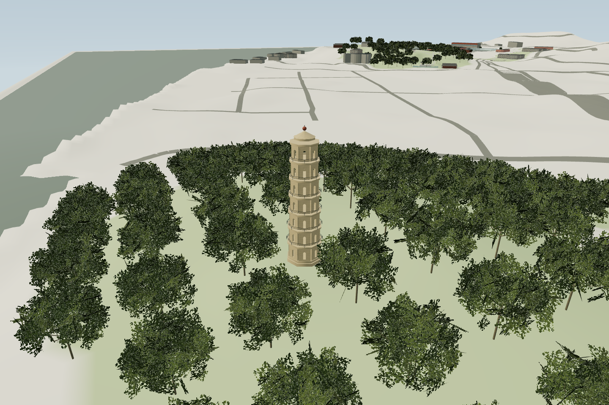
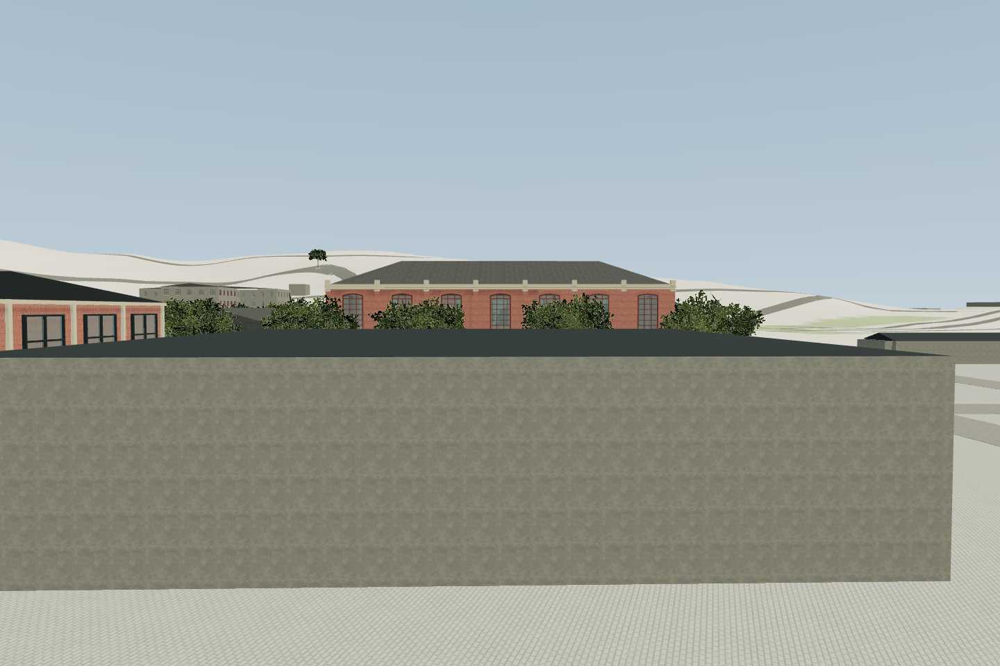
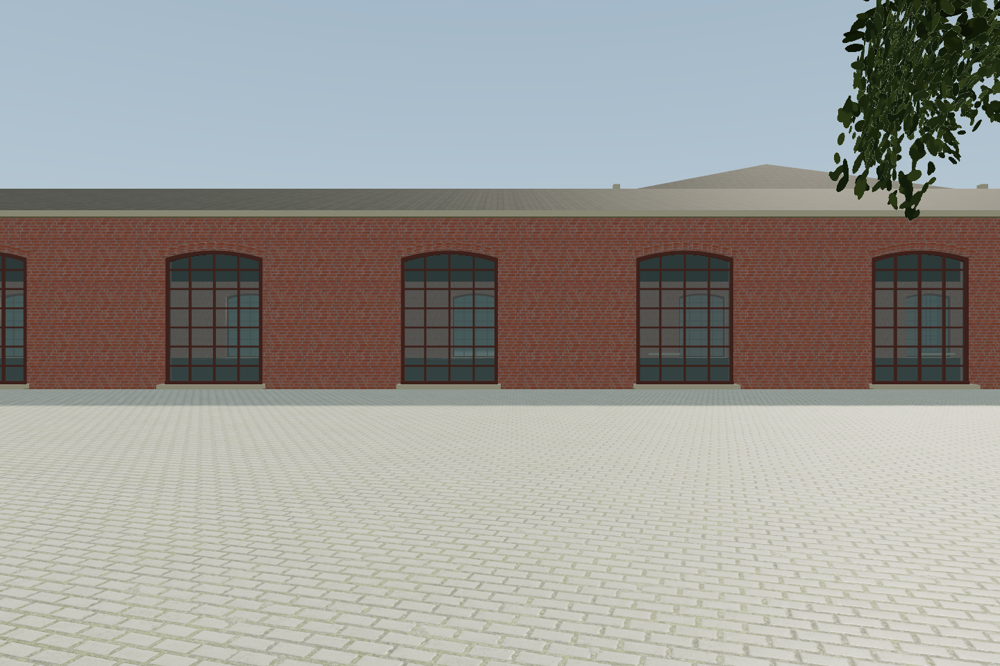
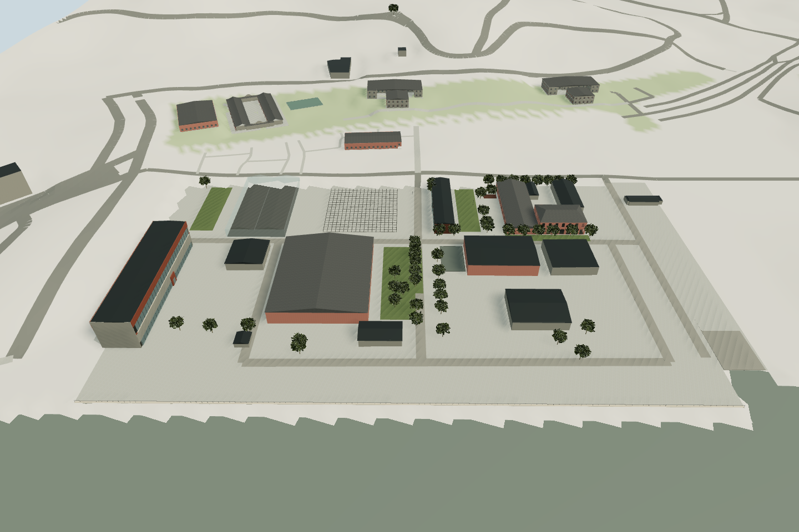
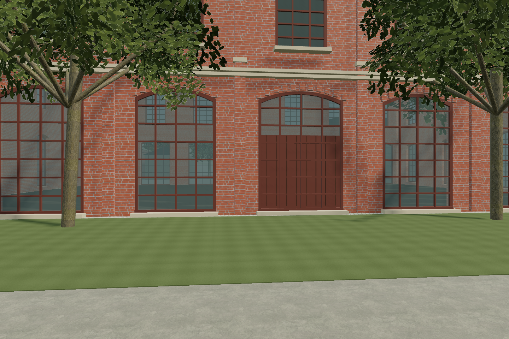

CHUANZHENG · EVIDENCE
布局与实景机位对照
本页图片均为实际网页渲染截图。原始实景摄影与图纸未发现开放再分发许可，请通过链接在原出版页面查看。摄像机坐标、焦距与拍摄日期未提供，当前为近似同向机位对照，尚未完成精确同角度 / 像素配准验收。
五大片区：范围扩展

在原船厂基础上扩展官街、马限山、旧港、罗星塔及连接道路。62处建筑/景点/复合院落记录、127条地图道路、三处公园和公开DEM地形。窗口为连接区域的矩形包围范围，不是官方111公顷保护红线。
官方五片区定义 · 窗口与轮廓GeoJSON · 22项来源及许可。新增片区为布局和形制阶段，周边城区仅显示已取得的地图体量，大片空白不代表实际空地。
罗星塔：实景形制对照

可核对：七层八角、石质塔身、底径8.6m、拱洞、栏杆和铁球塔顶。模型采用31.5m口径，另有官方30m口径，差异未通过测量解决。
截图为近似朝向鸟瞰；原航拍焦距、坐标、日期未提供，尚未做到精确同角度配准。石缝、台座、栏杆细部和植被只是近似。公园树冠覆盖是规则采样，不是逐树定位。
马限山与昭忠祠


绘事院西立面与前场

可核对：七开间、两层、中央入口、微拱长窗、砖壁柱、浅色线脚、女儿墙和四坡屋顶；前场水池及树列保持总平面位置关系。
差异：照片前景与模型机位仍有差别；墙高与窗宽估算；树形、接缝、后立面和墙面老化尚未逐项复原。玻璃反射为模拟。此样板尚未达到照片级。
轮机车间北立面

可核对：单层长条厂房、灰瓦双坡屋面、红砖和高大分格木窗。
该截图为步行定位点，可核对立面方向；未复现原图全部取景宽度、墙面修补、排水构件和树木个体。窗分格与厚度已制作，净尺寸仍估算。
核心区总布局

核对设计单位总平面和竣工航拍 ↗ · 建筑与边界GeoJSON · 独立读图差异记录
绘事院与轮机车间相接，书局位于内部通道一侧，剧场在中部，铁胁厂与博物馆在另一侧；14处体量均有来源。其余厂房的体量和屋顶仍为阶段一成果。新增的山体和河岸来自公开DEM与地图；周边城市仍缺大量逐栋轮廓和立面，不把这个阶段称为全区精细完成。
两点配准以绘事院与博物馆为锚点；六个独立读图点与OSM顶点均值差异约2.46–8.30m，不能据此声称绝对测绘精度。铁胁厂差异较大，需下一阶段实测校准。
材质、近景与触屏

CC0 通用 PBR 砖、铺装、树皮和抹灰配以程序屋瓦 / 木材。照片只作考证，不充当固定视角的立面贴纸。
触屏390×844模拟截图
故障提示截图
真实设备、检查与性能记录


移动设备为PC上的触屏模拟；未测真机帧率。三维步行、基本碰撞、台阶高度、小地图、画质和导出均经实际操作测试。